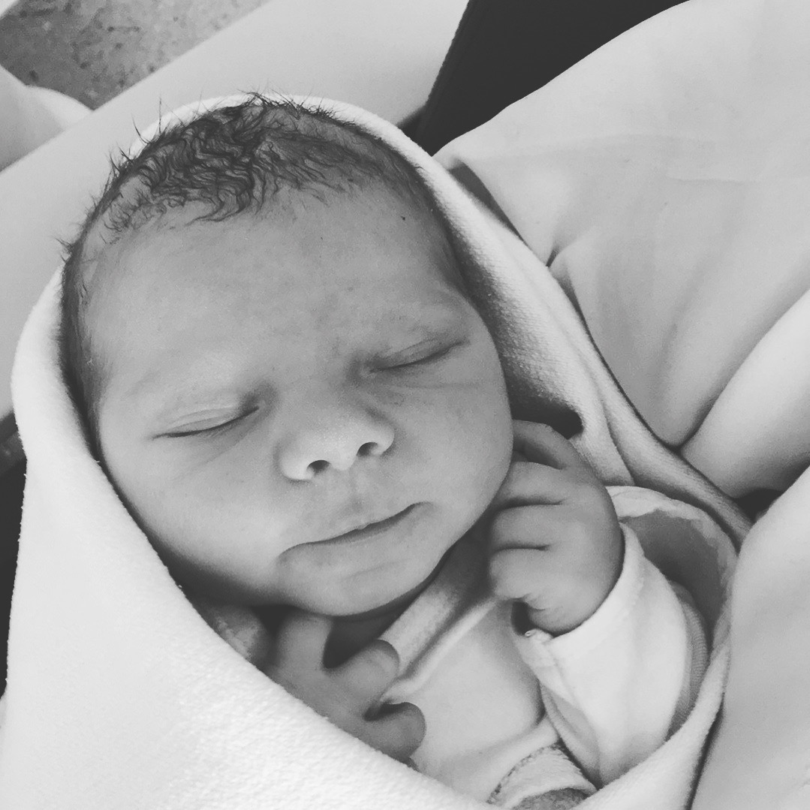

Auteur: Erik Menken

Het springzaad knapt, de brempeulen
knallen open en jij ligt er in je wieg
als een popelend boontje bij.
Alles mag je worden van mij: zeeman,
boswachter, archeoloog. Of -
als je leven ingewikkelder loopt -
gesponsord ontdekker van aangroei
werende stoffen voor scheepsverf,
alleenstaand paddestoelenfotograaf,
pacht- en beestenlijstenonderzoeker
van verdwenen Drentse keuterijen...
Behalve ongelukkig. Beloofd?
Met dank aan: